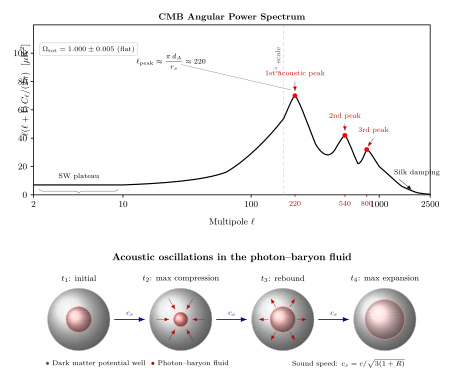

CMB 各向异性的第一个声学峰藏着什么?
上一节里, 我们让光爬出引力势井, 把谱线拉红. 那是一束光与一个势井的单向交易. 本节里, 我们把时间倒回到宇宙 38 万岁那天——当时整个可观测宇宙都是一口滚烫的势井汤, 光还没能独立行走. 在那之后, 光忽然挣脱了自由电子的束缚, 笔直地飞了 138 亿年, 最后落到我们的天线上, 温度降到 $T_0 = 2.725\ \mathrm{K}$.
如果这锅汤在复合时刻是完全均匀的, 那么今天我们看到的微波背景 (CMB) 应该各处完全一样, 没有任何结构. 但 1992 年, COBE 卫星带回的头条消息是: 不一样. 各个方向的温度之差约为 $\Delta T \approx 30\ \mu\mathrm{K}$, 相对值 $\Delta T / T \sim 10^{-5}$. 数字微小, 信息却惊人: 这些斑点不是随机噪声, 而是一张被精心调音过的乐谱. 本节要做的, 就是解读这张乐谱里最响亮的一个音符——第一声学峰.
一、复合前的光子-重子流体与它的声速
把时钟拨到红移 $z \approx 1100$ 之前. 那时宇宙温度约 $3000\ \mathrm{K}$, 比太阳表面还凉, 却已经热到让所有氢原子电离. 自由电子密密麻麻, 光子的平均自由程只有普通分子间距那个尺度: 光走不出几步就被 Thomson 散射. 于是有一件美妙的事情发生了——光子和电子、再通过库仑力和质子, 耦合成了一团整体可以被当作"流体"来处理的东西. 我们称它为光子-重子流体.
这团流体的物理其实并不神秘. 它是一个压力主要来自光子辐射、惯性质量主要来自两个来源 (辐射能密度 $\rho_\gamma$ 加上重子质量密度 $\rho_b$) 的东西. 定义一个无量纲比值
$$ R = \frac{3}{4}\,\frac{\rho_b}{\rho_\gamma}, \tag{1} $$因子 $3/4$ 是因为光子气体有 $p_\gamma = \rho_\gamma c^2 / 3$ 的状态方程, 重子没有压力. 绝热扰动下, 这团流体的声速就是
$$ c_s = \frac{c}{\sqrt{3(1 + R)}}. \tag{2} $$代入数字看一眼. 今天 $\Omega_b h^2 \approx 0.0224$, $\Omega_\gamma h^2 \approx 2.47 \times 10^{-5}$, 在复合时刻 $R$ 约为 $0.6$, 于是 $c_s \approx c/\sqrt{3 \times 1.6} \approx 0.46\, c$, 大约是光速的一半, 比纯辐射的 $c/\sqrt{3} \approx 0.577\, c$ 略低——重子给流体"加了重", 声音跑得慢了一点.
此外, 还有第四位主角: 暗物质. 它在复合前早已 decouple, 不与光子纠缠, 只用引力在那里耐心地挖势井. 光子-重子流体就掉进这些势井里, 一边被引力向内拽、一边被辐射压向外推, 来回摆动——就像一个被吉他拨动的弦. 这就是"声学振荡"名字的来历: 真的是声音, 真的在振, 真的发出了我们可以回放的余响.
二、从密度扰动到 $C_\ell$: 为什么峰是周期性的
最简单的暴胀模型给了我们一个极好的初始条件: 功率谱近乎平坦的高斯绝热扰动, 振幅在所有尺度上大致相当, 用指数描述是 $n_s \approx 0.965$, 刚好略微红倾. 这相当于在宇宙这把无限大吉他上, 同时拨了所有的弦.
每根弦 (每个波数 $k$) 的命运, 取决于它进入视界的时机. 宇宙早期视界以光速膨胀, 而波长的拉伸只跟随尺度因子 $a(t)$. 因此小尺度 (大 $k$) 的扰动先进入视界, 开始振荡; 大尺度 (小 $k$) 的则要等更久. 当复合发生时, 光子突然从电子里挣脱出来, 流体的压力消失, 振荡瞬间被"冻结"——每根弦被定格在它自己那一刻的相位上. 这就像一屋子节拍器, 大家同时开始、但周期不同, 某一瞬间把所有节拍器同时按停, 你会看到它们摆在各种各样的角度上.
最幸运的那批弦, 恰好在冻结时刻完成了整整半个、或者一个、或者一个半周期——它们的振幅正好停在极大值, 于是贡献了我们看到的那几个"峰". 具体来说, 第一个峰对应那些在从 Big Bang 到复合的时间里刚好压缩到了第一次极大的模式; 第二个峰对应它们恰好在反弹后膨胀到第一次极大的模式; 依此类推.
把观测到的温度图 $T(\hat n)$ 按球谐函数展开:
$$ \frac{\Delta T}{T}(\hat n) = \sum_{\ell, m} a_{\ell m}\, Y_{\ell m}(\hat n), \qquad C_\ell \equiv \langle |a_{\ell m}|^2 \rangle, \tag{3} $$这里 $\ell$ 是多极矩, 对应角尺度 $\theta \approx \pi / \ell$ (单位为弧度). 大 $\ell$ 是小斑点, 小 $\ell$ 是大斑点. 业内习惯画的纵轴是 $\ell(\ell+1) C_\ell / (2\pi)$——这样平坦扰动谱就长得平一点, 好看.

三、第一峰位置: 读出宇宙的几何
第一峰的位置由一个漂亮的几何关系给出. 在复合时刻, 声音跑过的最远距离叫做声视界 (sound horizon) $r_s$, 数量级为
$$ r_s = \int_0^{t_*} c_s (1 + z)\, dt \approx 147\ \mathrm{Mpc}\ (\text{共动距离}). $$
这就是乐器的"半波长". 把它从复合面投影到我们的天空, 它张开的角度是
$$ \theta_s = \frac{r_s}{d_A}, \qquad \ell_{\text{peak}} \approx \frac{\pi\, d_A}{r_s}, $$
其中 $d_A$ 是复合面的角直径距离, 约 $14\ \mathrm{Gpc}$. 代入数字: $\ell_{\text{peak}} \approx \pi \times 14\,000 / 147 \approx 299$——这是一个稍微偏高的纯几何估计, 实际测量是 $\ell_{\text{peak}} \approx 220$, 两者的差距来源于 $d_A$ 还得除以一个 $(1+z_*)$ 因子等一些技术细节 (复合面在红移 $z_* \approx 1100$ 而非今天), 但数量级清清楚楚对上了——1° 角尺度.
为什么这个数字是 220 而不是 120 或 500? 关键在于光从复合面到我们这 138 亿年里走过的路, 会因为空间是开、是平、还是闭而弯折不同. 封闭宇宙把远处的光线向中心收拢, 让同一块 $r_s$ 显得更大, $\ell_{\text{peak}}$ 更小; 开放宇宙则相反. 只有在平坦宇宙里, $\ell_{\text{peak}}$ 恰落在 220. WMAP 与 Planck 联合测到的结果是:
$\Omega_{\text{tot}} = 1.000 \pm 0.005$, 即空间曲率在 0.5% 精度上为零.
这就是 CMB 送给我们的第一句话: 你住在一张纸上, 不是一个球, 也不是一个马鞍. 这个结果曾经让一代宇宙学家长舒一口气——因为暴胀理论的最直接预言就是 $\Omega_{\text{tot}} = 1$.
四、第二、第三峰与 $\Omega_b \approx 0.05$, $\Omega_{\text{DM}} \approx 0.26$
如果说第一峰的位置告诉我们"宇宙长什么形状", 那第二、第三峰则告诉我们"宇宙装了些什么东西".
第一峰对应压缩极大, 第二峰对应膨胀极大. 重子给流体加了重, 像给单摆挂一块金属, 使得"向下"压缩的那一半周期比"向上"膨胀的那一半更剧烈. 因此, 重子多, 奇数峰 (压缩) 相对偶数峰 (膨胀) 更高. 观测上, 第一峰振幅约 $70\ \mu\mathrm{K}^2$, 第二峰 $\sim 40\ \mu\mathrm{K}^2$, 比值告诉我们
$\Omega_b \approx 0.05$, 即重子只占宇宙能量密度的 5%.
这个 5% 与核合成 (BBN) 独立给出的结果精确吻合——CMB 是时间 38 万年的快照, BBN 是时间 3 分钟的快照, 两者在完全不同的物理下给出同一个 $\Omega_b$, 这种吻合是现代宇宙学最硬的几块石头之一.
第三峰对 $\Omega_{\text{DM}}$ 敏感. 暗物质在辐射为主到物质为主的转变 (matter-radiation equality) 上决定了势井的演化, 进而决定高 $\ell$ 峰的相对高度. 拟合得到 $\Omega_{\text{DM}} \approx 0.26$, 加上 $\Omega_b$ 共约 0.31 是物质, 剩下的 $\Omega_\Lambda \approx 0.69$ 由暗能量填补, 合起来正好是那 1.000.
两个极限自然地出现在谱的两端. 低 $\ell$ 一侧, 那些模式在复合时尚未进入视界, 流体没来得及振荡——我们看到的涨落几乎只是原初引力势的投影, 即光从深势井爬出时遭受的引力红移, 称作 Sachs-Wolfe 效应. 它给出的是一块平坦的平台, 而不是峰. 高 $\ell$ 一侧, 光子在复合瞬间还没真的瞬间解耦——它们继续扩散了一小段自由程, 把过小尺度的热点和冷点抹匀. 这个过程被英国天体物理学家 Joseph Silk 在 1968 年预言, 今天叫 Silk 阻尼: 它让 $\ell \gt 1500$ 之外的功率谱像一条加速坠落的指数尾巴.
历史上, 这张谱是用了三十年、三代卫星才画出来的. 1989 年发射的 COBE, 由 George Smoot 和 John Mather 领导, 在 1992 年首次确认了 $\Delta T / T \sim 10^{-5}$ 的各向异性, 但只能到 $\ell \sim 20$ 的精度——只够看到 SW 平台. 两人因此获得 2006 年诺贝尔物理学奖. 2001–2010 年的 WMAP 把精度推到 $\ell \sim 800$, 第一次清楚地画出了三个峰. 2009–2018 年的 Planck 卫星则把角分辨率压到 5 弧分、精度覆盖到 $\ell \approx 2500$, 于是我们今天拥有的 CMB 功率谱, 几乎每一条误差棒都比理论曲线本身还窄. 六个 $\Lambda$CDM 参数——$\Omega_b, \Omega_{\text{DM}}, \Omega_\Lambda, H_0, n_s, \tau$——被这条曲线按得牢牢的.
小结
光在这一节的角色不是介质、不是粒子, 而是一架在 38 万年那天被按下快门的录音机. 复合前它和重子一起振荡, 复合时被释放, 把那一瞬间的声学相位烙在了全天的微波图上. 第一峰 $\ell = 220$ 告诉我们空间是平的, 第二、第三峰告诉我们宇宙里 5% 是重子、26% 是暗物质、剩下的一大半是暗能量. 这些数字如此精准, 以至于 "光是什么" 这个问题的答案, 不再仅仅属于电磁学, 也属于宇宙学——光是最远古事件的忠实信使, 它带来的每一个 $\mu\mathrm{K}$ 都能翻译成一个宇宙学参数. 下一节我们将看另一种更极端的宇宙信使——脉冲星——它如何用毫秒级的钟表测试广义相对论与星际介质.
▲